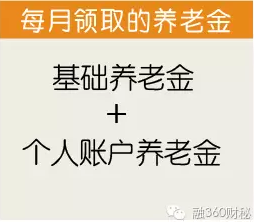
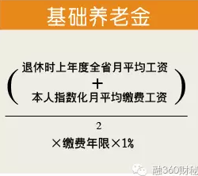
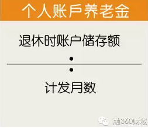
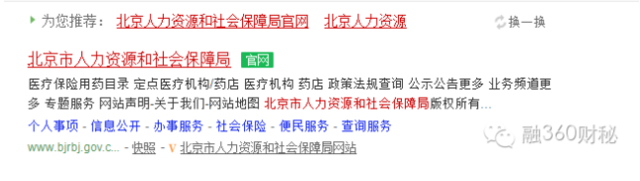
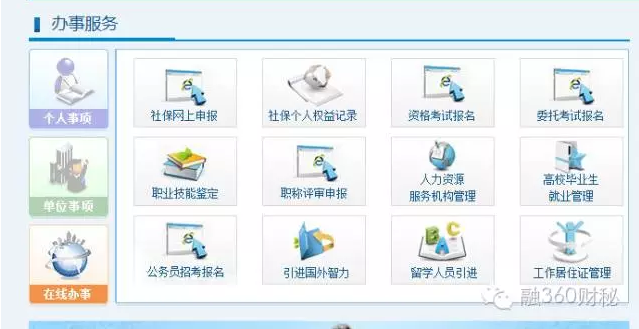

小朱大学毕业后进入某互联网公司工作，一年后，她升任该公司运营部主管，月薪升至每月9000元。然而升职的喜悦尚未褪去，小朱却发现她与单位签订的劳动合同中，关于社保和福利待遇的条款竟然约定小朱的养老、失业、工伤、生育保险按社保局规定最低参保基数2585元/月投保（社会保险缴纳基数每年随政策调整而调整）。
自己的工资明明是9000元，为何在缴纳保险时却按照最低参保基数缴纳？原来，这是该公司的“潜规则”，所有员工无论工资高低，一律按照最低参保基数缴纳社会保险。对于这样的“霸王条款”，员工也只能忍气吞声。
不久前《2016中国企业社保白皮书》正式发布，白皮书披露了一个惊人的数字――有超过7成的企业未按照职工工资实际核定社保缴费基数，其中3成以上的企业统一按最低基数缴费！社保缴费基数完全合规的单位仅占25%。
低缴社保是为节省人力成本
我国的社保费是单位和自己共同承担的，而且单位交的比例比你自己交的还要多！拿北京地区为例，单位交的一般是你自己交的3倍！当然社保的缴费比例各个地区是不一样的。
举个例子，工资5000，坐标北京，假设缴纳社保，个人缴纳社保的总比例是10.2%，也就是510元。而单位给你缴纳的总比例是32.3%，也就是1615元！也就是说，如果公司不给你缴社保，虽然你每个月可以多“得”510元，但是单位却为此省下了1615元！
但是，随着社保缴费工作的推进，企业社保合规已经逐步走过了 “不缴社保”、“迟缴社保”的阶段，进入“缴了但基数不足”的阶段。
缴费基数是什么？
养老保险的19%
医疗保险的10%
失业保险的0.8%
生育保险的0.8%
工伤费率（行业不同而有差异）
企业要为员工缴纳的社保费率超过了30%。
如何才能节省成本呢？缴费比例是乘数，是固定不变的，那就只能在缴费基数这个被乘数身上做文章了。既然是以本人上一年度的工资收入为缴费基数，那么这个数值就不是固定的，每个人都可能不一样，而员工的收入情况又掌握在用人单位手里，这就给了用人单位操作的空间。
在向社保部门申报时，公司会把每员工的工资往低了报，比如说税前工资10000元，公司只报了4000多，正因为实际差了一多半，所以单位和个人的缴费金额都能省下一多半。按照这个虚报的缴费工资，公司每月可以少交很多，自己的工资又可以被少扣很多，所以，公司给员工把基数报低了，很多人倒并不太在意，也很少有人去追究。因为缴费基数定得低，自己交的钱也少，好像并没有什么不好。相反，还有不少人心甘情愿地想要低缴社保。
像一些刚参加工作的年轻人，由于他们身体更健康，同时个人现阶段的经济基础相对薄弱，需要承受租房等开支压力，因此对于缴纳社保的积极性不高，他们更在意当下能拿到多少钱。
如果社保被低缴了，会有多大影响呢？
按照养老保险的规定，退休时领取的基本养老金由基础养老金和个人账户养老金两部分组成。

而，其中基础养老金：

本人指数化月平均缴费工资=退休时上年度在岗职工月平均工资×缴费指数。在“上年度在岗职工月平均工资”、“截至退休时本人缴费年限”这两个数值确定时，“本人指数化月平均缴费工资”这个数值越大的话，最终的计算结果肯定就越高。
而“本人指数化月平均缴费工资”=退休时全省上一年度在岗职工月平均工资×本人平均缴费工资指数。
本人平均缴费工资指数=（x1/c1+x2/c2+……+xn/cn）/N
x1、x2……为参保人员退休前一年、两年……本人当年缴费工资额
c1、c2……为参保人员退休前一年、两年……全省在岗职工平均工资
在C（每一年的全省在岗职工平均工资）和N（缴费年限）固定的情况下，当然是X（本人当年缴费工资额）越大，所得的结果越大。由此可见，每个人的基础养老金多少，跟他的缴费工资数额关系巨大，年轻时缴费工资申报越多，所得的基础养老金也越多。
我们再来看一下个人账户养老金，这个比较好理解，当然是年轻时缴费越多，缴费本金、利息等也越多。

从这些复杂的计算方法当中可以看出，单位是否足额给员工缴纳社保，对于员工退休后的养老金待遇是有着决定性影响的。
另一方面，虽然公司按最低给你缴社保，看似你要交的五险一金也少了，到手的钱变多了。但别忘了，公积金是可以取出来用的。缴费基数高，公积金数额也高。所以不要只看到手的工资，算一算公积金再看。
如何查询社保是否被低缴了呢？
您可以通过以下方法了解公司是否已经给您办理了参保手续，各地区查询步骤有少许不同之处，但大同小异，下面以北京为例：
第1步：搜索"北京市人力资源和社会保障局"，单击进入。

第2步：找到右侧的"社保电子证明查询打印"，点击进入。

第3步：点击，社保个人权益记录，依次输入①社保编码②查询密码（初始值为身份证后8位）③验证码，然后点击右侧登录按钮。
客户端下载
官方微信